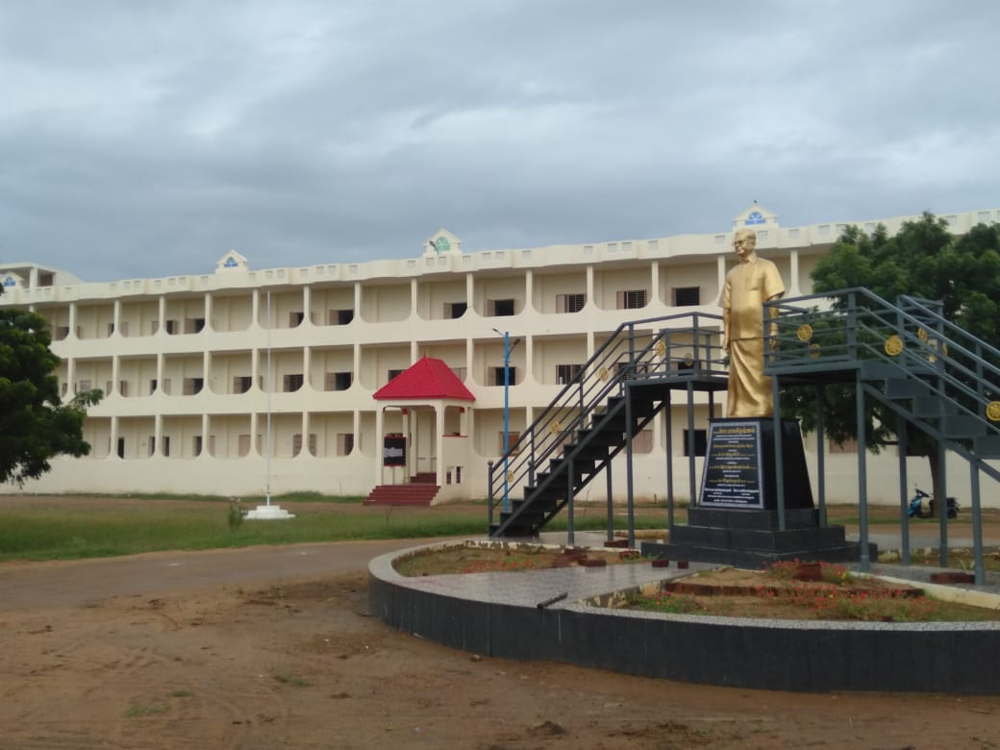
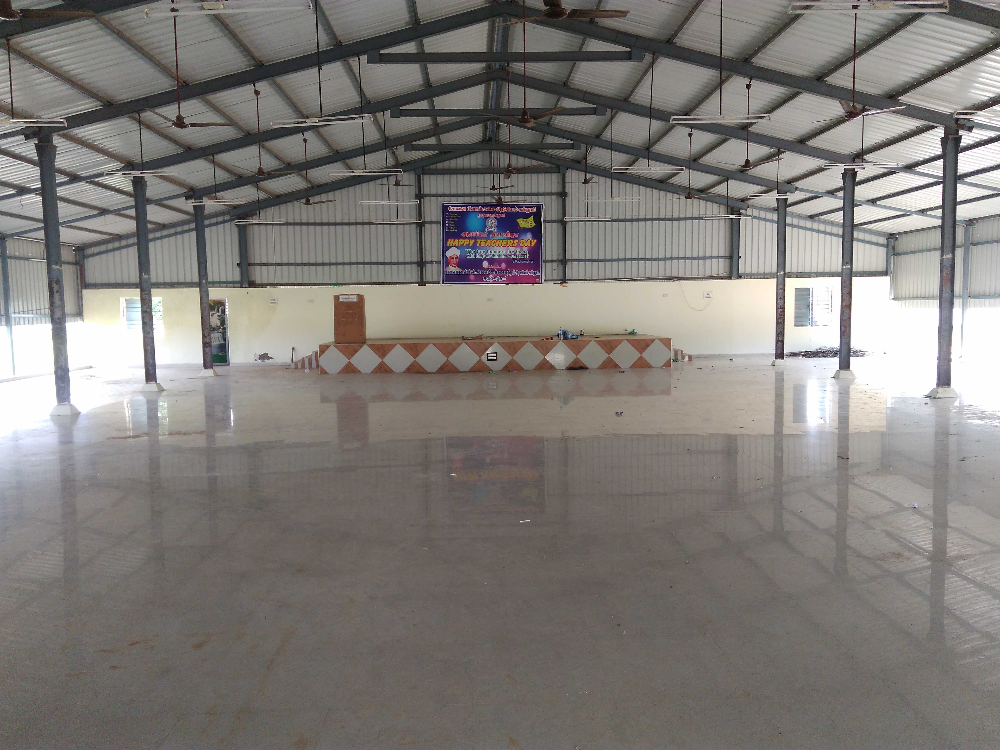
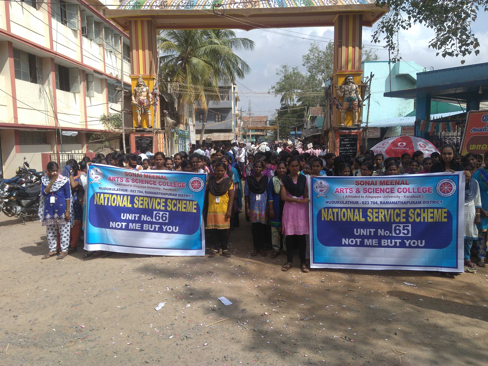
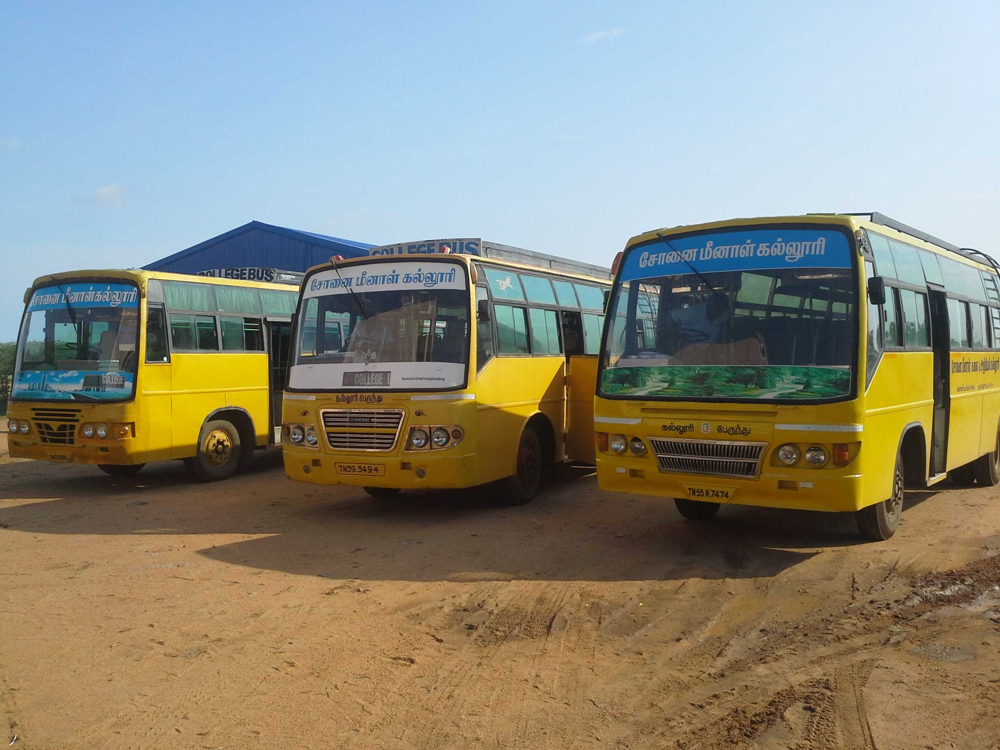
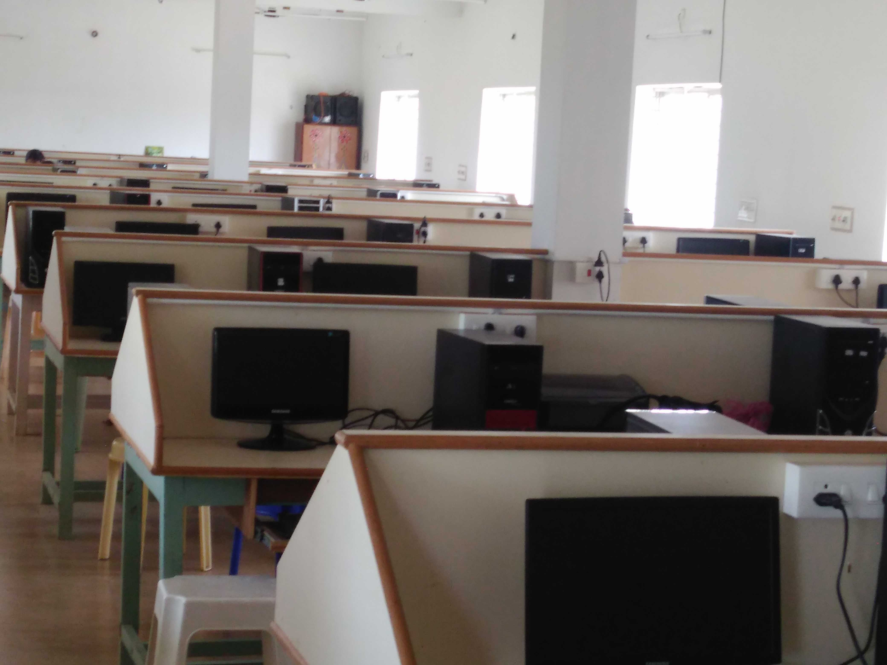
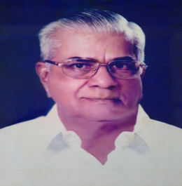

(Affiliated to Alagappa University, Karaikudi) Mudukulathur,Ramanathapuram District,Pin Code-623704,Tamil Nadu.
Sonai Meenal Arts and Science College was founded in 1998.This College is affiliated to the Alagappa University, Karaikudi. The college is administrated by the Sonai Meenal Educational Trust. This Trust was established by Thiru.So.BALAKRISHNAN, he was a founder of this institutions and Former-Opposition Leader of TamilNadu Assembly. This College is situated in Vennirvaikkal village at Mudukulathur Taluk with the Areas of 25 Acres Land. At Present, the chairman of the Trust is Mr.S.ASHOK KUMAR and this College Correspondent is Mr.SO.BA.RENGANATHAN B.E., This college was started with the strength of just 32 students and 8 Teaching-Faculty members. It has grown steadily and at present strength has 600 Students with 33 Teaching-Faculty Members and 17 Non-Teaching Staffs. The college is extending its institutional Social Responsibility (ISR) to neighborhood villages and to the local community through Community Social Services (CSS) under Sonai Meenal Educational Trust.
Sonai Meenal Arts and Science College located at Mudukulathur, Ramanathapuram dist, Tamilnadu categorized as Arts and Science. The group of visionaries and intellectuals to impart education in a stimulating and innovative environment where students are empowered with knowledge and professional skills while upholding the values of integrity, tolerance and mutual respect. It is among the prominent colleges of its field in the located at Mudukulathur, Ramanathapuram dist, Tamilnadu . Sonai Meenal Arts and Science College the ambiance provided by the institute facilitates quality learning. The college mission is to develop well qualified, globally accepted, world class technically sound professionals, capable of updating with cutting edge technologies, innovative research ideas with social commitments and highest ethical values as inner strength, for the upliftment of mankind, trained through high profiled experienced faculty, career oriented courses and interactive teaching-learning process.
keep in touch with us and be proud to be an alumini
It is a degree program that explores mathematical concepts and their applications in various fiels
It is a degree program that focuses on computer systems and software development,offering a strong foundation in programming and technolgy
it is a degree program that focuses on computer systems and software development,offering a strong foundation in programming and technolgy.
It is a degree program that explores the world of chemicals,reactiond and thier applications
It is a degree program that focuses on the study of english language,literature and communication skills
It is a degree program that focuses on the study of tamil language,literature and communication skills
It is a degree program that explores the fundamental principles and laws of the Physical world
It is a degree program that focuses on the study of animals and thier behaviours
It is an undergrduate program that explores various aspects of commerce and business management
The applications forms for all the programmes shall be obtained from the college office, either in person or by post, by paying the prescribed fee. The application form may get from the college office and submitted, either in person or by post, along with a DD for the prescribed cost of the application. The DD should be obtained in favour of The Correcspondent, Sonai Meenal Arts and Science College, on any nationalized banks payable at Mudukulathur.
For UG programmes, the filled-in application form, along with xerox copy of the following documents, should be submitted within 10 days of the publication of the + 2 Examination results.Application Fess is Rs.100
For PG programmes, the filled-in application form, along with xerox copies of the following documents should be submitted within 10 days of the publication of the UG Examination results of the University.Application Fess is Rs.150
| Bus Number | Route |
|---|---|
| 1 | Kamuthi-Peraiyoor-Mudukulathur-College. |
| 2 | Paramakudi-Perumaalkovil-Vilathoor-Pamboor-College |
| 3 | Anikurundan-Meesal-Posukudi-College |
| 4 | Kamatchipuram-Pookulam-Mudukulathur-College |
| 5 | Muthuramalingapuram patti-Thiruvarangam-Alanganoor-Mahindi-College |
| 6 | Udaiyanathapuram-Kadamangulam-Selvanayagapuram-college |
| 7 | Vilathoor-Kottakudi-Selvanayagapuram |
| 8 | Sayalkudi-Kadaladi-Appanoor-Mudukulathur-College |
| 9 | Abiramam-Keeranoor-College |
| 10 | Theriruveli-Kakkoor-Mudukulathur-College |
| 11 | Paramakudi-Pamboor-Thooval-College |
Participation in games and sports invariably ensures good health, fitness and, generally, freedom from ailments of various types. Physical fitness is essential for proficiency in studies and for winning distinctions in examinations. Ailing bodies do not make for sharp brains. Exercise in some form or another is necessary, and sports provide an easy method to ensure such fitness. Playing the game on the playground naturally instructs people to play the game of life in the right spirit, which is what matters most, not victory or defeat.
The College provides facilities for the following games and sports:
All the students of the College are members of the Athletic Association. The Physical Director is the Ex-officio secretary of the association. The activities of the association shall be managed by a sports Committee.
Intramural sports and tournaments are conducted every year. Players and Athletes selected for college teams should play for the college only.
The Motto of NSS, "NOT ME BUT YOU", reflects the essence of democratic living and upholds the need for self-less service. NSS helps the students develop appreciation to other person's point of view and also show consideration to other fellow human beings.
The College has 2 units, with strength of 200 volunteers. Every student member of NSS should serve for at least two years with 120 hours of engagement in community service, per year, excluding annual camps. At the end of two years of satisfactory service, every student member will receive the NSS Certificate, which is considered as equivalent to a diploma in Social Service.
The main objectives of National Service Scheme (NSS) are :
Youth Red Cross is a youth wing of the Indian Red Cross Society functioning in our college. It has young volunteers who can make a significant contribution to meeting the needs of the most vulnerable people within their local communities. The programe focuses on the following areas:
The Red Ribbon Club, functioning in our college, is a voluntary on-campus intervention programme for students. It is initiated and supported by the State AIDS Control Society and implemented through multi-sectoral collaboration, particularly, using the services of cadre officers of the State's National Service Scheme (NSS).
The programe will address the knowledge, attitude and behavior of the youths in the interrelated areas of Voluntary Blood Donation, HIV & AIDS prevention, as demanded by their age, environment, and life style. The Red Ribbon Club will serve as a complementary and comprehensive prevention intervention to support and reinforce similar youth led initiatives. It will also prepare and promote youth peer educators within and outside the campuses.
Chairman Sonai Meenal Educational Trust
Correspondent Sonai Meenal Arts and Science College
Principal
Vennigarden,Vennirvaikkal Post
Mudukulathur.
Ramanathapuram dist.
Pin:623704
Mobile no:9786235011
email:smsc1998@gmail.com